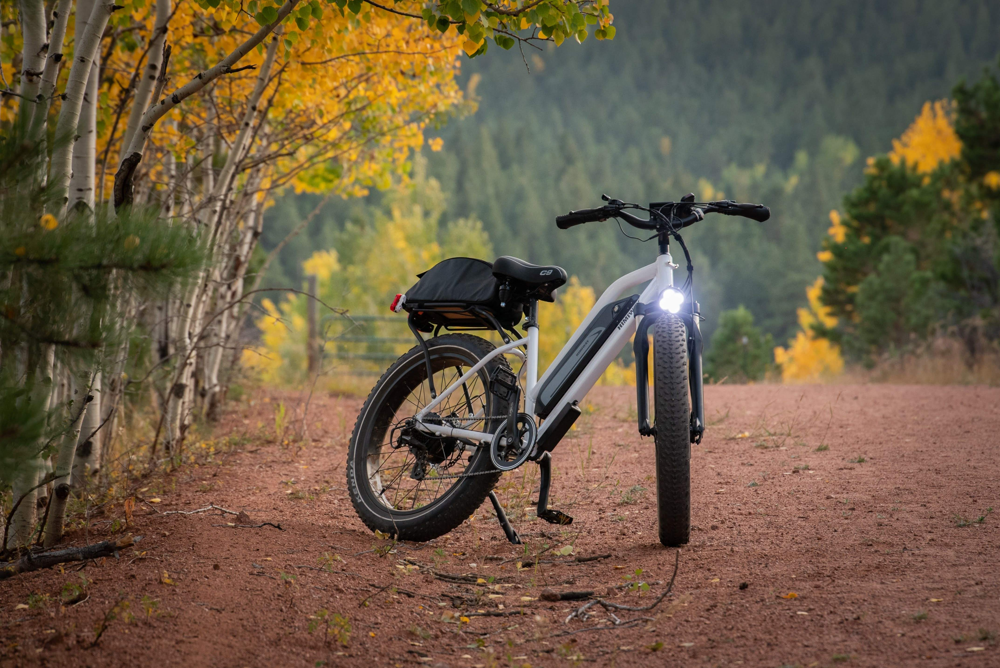

THE HEAD LIGHTS

"Let's keep it real... when it comes to nighttime cycling in Nigeria, there's just nothing like it. Picture this: cruising through the moonlit streets, embracing the cool night breeze ...it's practically a two-wheeled adventure party!
But hey, let's address the inevitable porthole predicament that fill our Nigerian roads...lol. You see, in the absence of a trusty headlight, it's like trying to dodge those sneaky portholes blindfolded. Not exactly good news for your wrists, right? üï≥Ô∏è
Here comes the hero... Your Headlight, steps in with a confidence that even Beyoncé would envy...wink! Need to see where you're headed? The headlight helps here! Need other road users to bask in your radiant presence? Double-check. Now, let's get down to business why are these luminous sidekicks such a big deal? Well, besides giving you the power to spot those ever present portholes from a mile away (no blindfold required), they're practically your guardian angels, reducing the risk of any unwanted incident by a whopping 60%.
Oh, and the confidence boost? It's real With your trusty headlight leading the way, you'll ride with the swagger of a two-wheeled rockstar. And let's not forget the VIP treatment you'll get from fellow road users who can spot you from afar. It's like rolling out the red carpet wherever you go.
So, before you pedal off on your next epic ride across the Nigerian cycle space, remember the golden rule: Never leave home without your headlight.